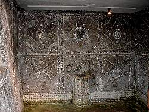
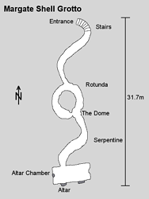

Margate Grotto
Shell Grotto - Margate Shell Grotto
Useful Information
|  |
| Image: The Dome. © Mick Crowhurst, with kind permission. |
| Location: | Margate, Kent. In Grotto Hill, near the top of Athelstan Road. |
| Open: |
Good Friday to OCT daily 10-17. NOV to Easter Sat-Sun 11-16. Closed over Christmas and New Year. [2009] |
| Fee: |
Adults GBP 3, Children (4-16) GBP 1.50, Children (0-3) free, Seniors GBP 2.50, Students GBP 2.50, Family (2+2) GBP 8. Groups (10+): 10% discount when pre-booked. [2005] |
| Classification: |
 Grotto Grotto
|
| Light: | electric. |
| Dimension: | |
| Guided tours: | D=20min, L=100m. |
| Photography: | |
| Accessibility: | |
| Bibliography: |
by
C. E. Mitchell (ny):
The Story of the Margate Grotto,
H Bridgewater (1935): The Grotto, Margate. C & N Shaw (1954): The Shell temple. The Grotto. Margate. Sylvia F Beamon (2002): Underground Mythology, 123 pp illus. Published by the author. pp 7 - 45 illus Ruby M Haslam (ny): The Shell Grotto at Margate, Suggests that the Grotto's architect was Sir Isaac Newton. This dates the Grotto to c 1690. |
| Address: |
Margate Grotto, Grotto Hill, Margate, CT9 2BU, Tel: +44-1843-220008.
E-mail: |
| As far as we know this information was accurate when it was published (see years in brackets), but may have changed since then. Please check rates and details directly with the companies in question if you need more recent info. |
|
History
| 1835 | rediscovered. |
| 1837 | opened to the public. |
| JUN-2008 | Friends of the Shell Grotto formed. |
Description
|  |
| Image: map of the Shell Grotto. © Mick Crowhurst, with kind permission. |
The origins of this grotto, rediscovered in 1835, seem very obscure. It is undoubtediy man-made, but without any clue as to its age. The murals suggest eighteenth to nineteenth century, but could equally be much older. The grotto consists of an entrance down a flight of steps, into a curving passage, which leads into a circular chamber called the Rotunda. This chamber is narrowed to a passage by a great circular pillar in its centre. At the further end of this chamber a passage leads off to The Dome, with arches opening out in three directions.
By one of these arches the visitor passes down the Serpentine Passage, with a vision of curving walls, and over arching vaults, clothed in a brown sheen of mosaic, rich in design. It is interesting to note, that all the patterns, which are worked in shells, are almost entirely emblems of India, Egypt and the East. The designs are numerous and varied, and it has been estimated that over fifty different types of shell were used in their construction, making this grotto unique in the British Isles.
Text from: Tony and Anne Oldham (1972): Discovering Caves - A guide to the Show Caves of Britain. With kind permission by Tony Oldham.
Margate Grotto is also called Shell Grotto.
It is a single artificial passage in the chalk, rather small compared to nearby
 Margate Caves.
The walls and ceiling are covered in elaborate shell decoration in complex
patterns.
It is completely unknown who constructed it, how old it is or what its purpose
was.
Margate Caves.
The walls and ceiling are covered in elaborate shell decoration in complex
patterns.
It is completely unknown who constructed it, how old it is or what its purpose
was.
As no real explanation exists, many bizarre stories about this cave have been told over the years. We read about Roman age and Medieval age. An old guide book even tells, that it is more than 1,000 years old, and of Phoenician origin. Actually the Phoenicians lived in the Mediterranean, probably this theory was based on the designs which show emblems of India, Egypt and the East.
Mick Twyman of the Margate Historical Society was carefully measuring the angles within the Grotto and observed the position of projected sunlight onto the inside of the dome. He believes the Grotto was associated with the Knights Templar and the Altar Chamber was an early temple for Masonic rituals, with a construction date of mid 12th century.
The official view of the management is: As yet, no documents that mention the Grotto and pre-date its discovery of 1835 have been found: no correspondence, no maps, nothing to date the construction of the Grotto beyond doubt. So, for the time being, theories on the Grotto's origins are just that: theories. We do not know who made it, when or why.
Since June 2008 there is a group called Friends of the Shell Grotto which is an independent trust committed to preserving and promoting the grotto.
 |
| Margate Shell Grotto Gallery |
- See also
 Search Google for "Margate Shell Grotto"
Search Google for "Margate Shell Grotto" Google Earth Placemark
Google Earth Placemark Shell Grotto - Wikipedia
(visited: 27-FEB-2011)
Shell Grotto - Wikipedia
(visited: 27-FEB-2011) The Shell Grotto, Margate,
official website.
The Shell Grotto, Margate,
official website.- The Margate Shell Grotto,
by R. F. LeGear.
- Friends of the Shell Grotto
- Kentish Shennanigans
- Shell Grotto, an Attraction in Margate, Kent. Search for Kent Attractions.
- BBC Inside Out - The mystery of history